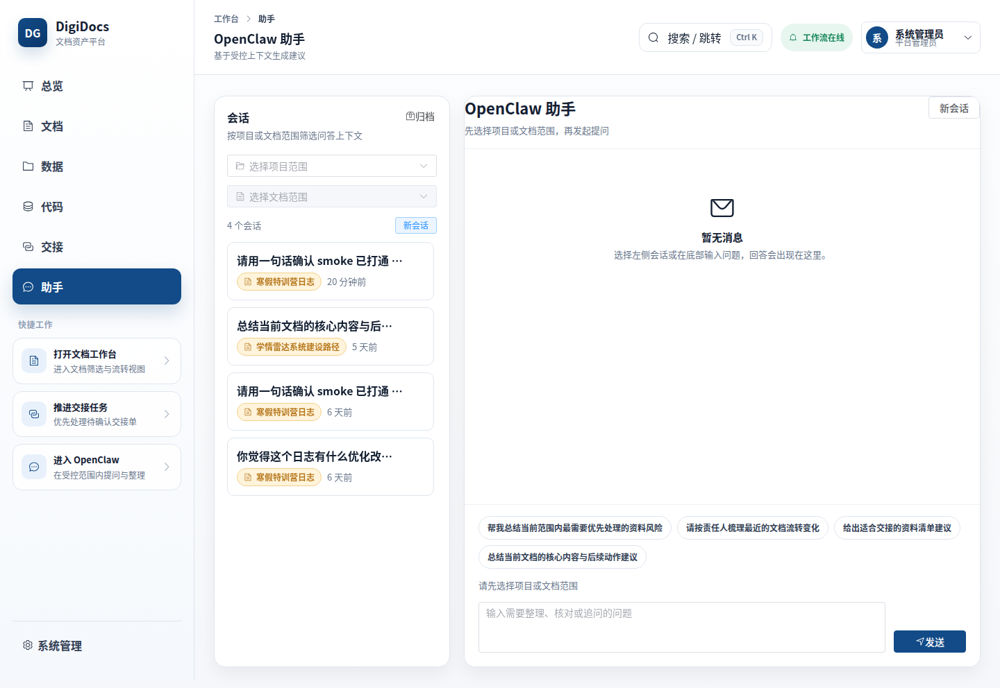
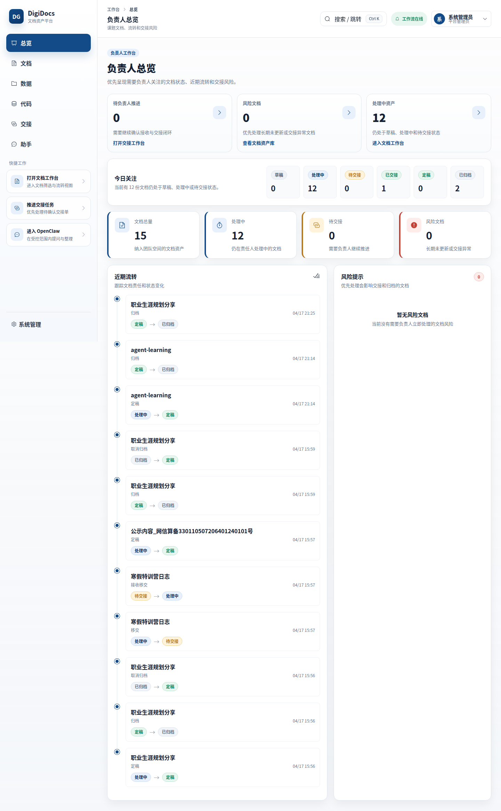
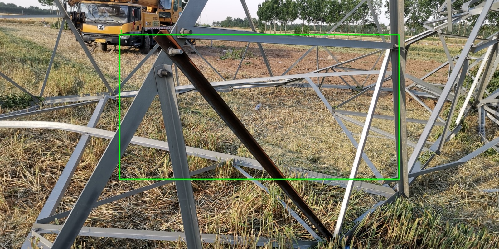
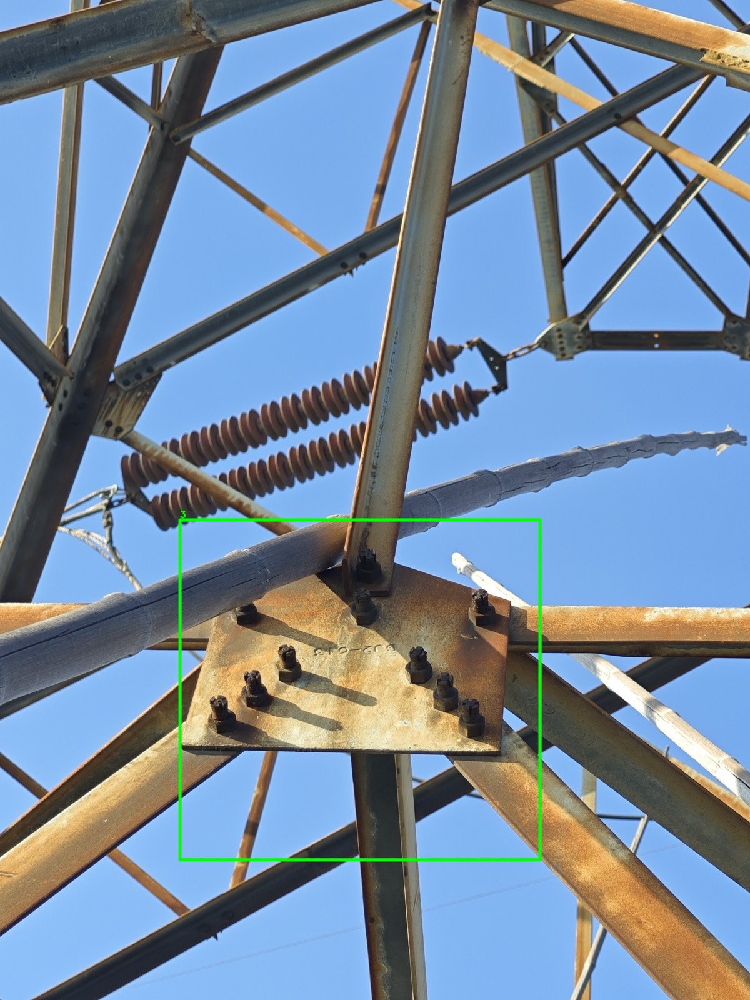

Private AI Infrastructure & Applied Intelligence
让大模型 真正进入 客户现场
面向高校科研、行业知识管理与工程巡检场景，提供从本地算力底座到 AI 应用系统的私有化建设服务。
不是采购一套工具，而是建设一条可持续运行的 AI 能力链。
新工智造把本地算力、私有数据、行业模型和业务系统连接起来，帮助客户在自己的环境中安全使用 AI、管理知识资产、提升现场运营效率。
01 · Local AI Deployment
本地大模型部署与应用开发
为重视数据安全、稳定访问和长期运维的客户，建设可控的本地 AI 底座，并在其上开发行业问答、知识库、流程 Agent 与业务助手。
02 · Intelligent Research Assets
智研云枢智能文档管理系统
面向高校课题组和科研团队，把文档、数据和代码沉淀为可管理、可追溯、可复用的团队资产，让负责人在关键节点前看见进度、风险和交接状态。


03 · Infrastructure Inspection AI
工程巡检智能运维系统
面向电气与土建基础设施，把无人机、边缘设备和视觉识别模型接入巡检流程，形成“采集、识别、复核、上报、报告”的智能运维闭环。


Why XG Intelligence
从方案、设备到系统交付，减少客户试错成本。
新工智造关注的是客户能否真正用起来：数据不出域、系统可演示、部署可验收、后续可迭代。我们用已有研发资产支撑方案表达，用工程化交付保障项目落地。
从 ECS 门户到客户内网算力与存储，兼顾访问入口、安全边界和运维便利。
不是只接模型接口，而是围绕客户工作流程构建可用的智能系统。
重视部署、验证、回滚、文档和后续迭代，让试点更接近正式运行。
Start A Conversation
如果您的团队正在规划私有化 AI、知识资产管理或工程巡检智能化，我们可以从一场方案沟通开始。
说明业务场景、数据边界、部署环境和预期成果，我们会给出适合当前阶段的建设路径。